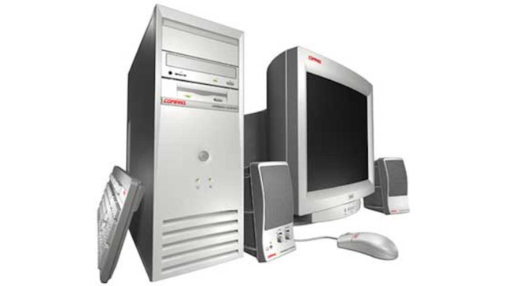

My interest in information technology has only grown stronger as has its relevance in the daily lives of not only myself but nearly everybody and as I delve deeper into its depths learning more and more as to what goes into the creation process of such technologies, the more I would like to know and progress my knowledge on it. My interest in information technology started young but I had not realised it before, growing up in a time where I had used a computer when very young where things were very slow and complex to do in comparison to now. Going from using old consoles and computers to exploring how they began to work made me realise through the years about how much it has interested me over time, where now I can fully explore the wide world of IT. There wasn’t a particular event but numerous over many years as I would use different types of technology becoming better at using them as the time went by which collectively developed my interest. My experience in IT has primarily come from exploring technology in my own time out of curiosity, working out how to use new software and hardware become proficient in the use of such tools to building my own computer. Another large portion of my experience would be completing information technology in high school (From year 9-12) in which I enjoyed every year to where it had become my favourite class, in class we covered many aspects such as photoshop, developing websites, coding, databases, infographics and multi-modal solutions
 https://247wallst.com/special-report/2016/04/15/how-much-a-computer-cost-the-year-you-were-born/7/I chose to come to RMIT after previous suggestions from friends and family which lead me to researching how RMIT operated and what resources it had to offer and if they would benefit as well as lead me to ending up where I wanted. After much research amidst the hectic time of year 12 and a vital visit on the open day I had made a decision, despite looking into other universities such as Swinburne, none had that sense of feeling that they could deliver like RMIT, although other places may have been easier to get to, the opportunity provided came first and now currently studying my Bachelor of Information Technology course I can confidently say that I have made the correct choice. I expect to learn during my studies, the required to skills to progress into the IT industry which would contain activities as programming, design, databases, cloud and mobile computing and system administration.